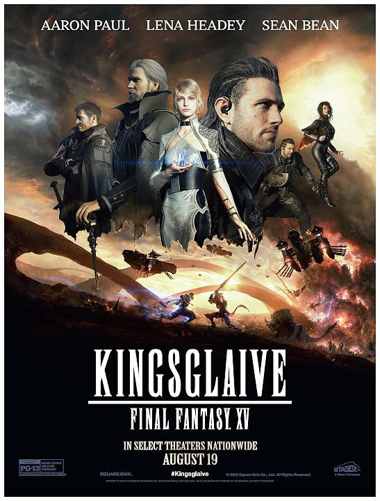

▶＋HD2016IMDb 6.7Kingsglaive: Final Fantasy XV (2016)انیمیشن، اکشن، ماجراجویی، فانتزی، علمیتخیلی
▶＋HD2021IMDb 7.3Shang-Chi and the Legend of the Ten Rings (2021)اکشن، ماجراجویی، فانتزی، رزمی، علمیتخیلی